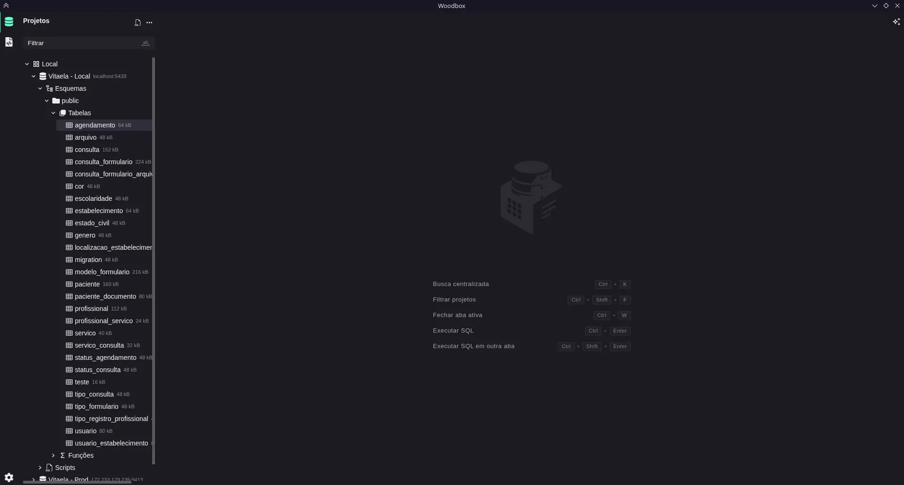
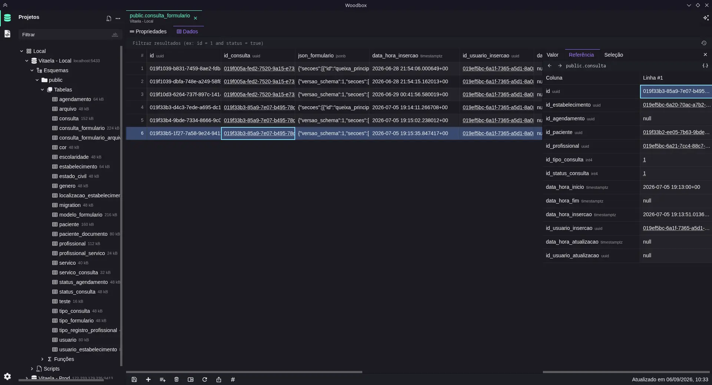
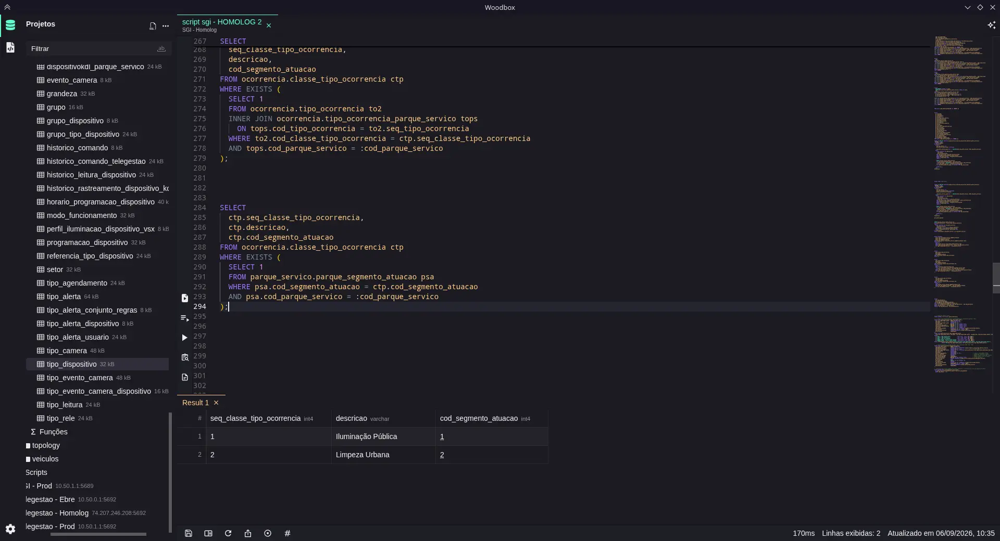
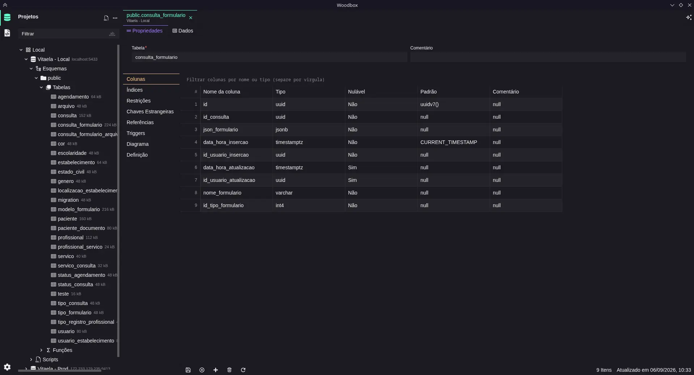
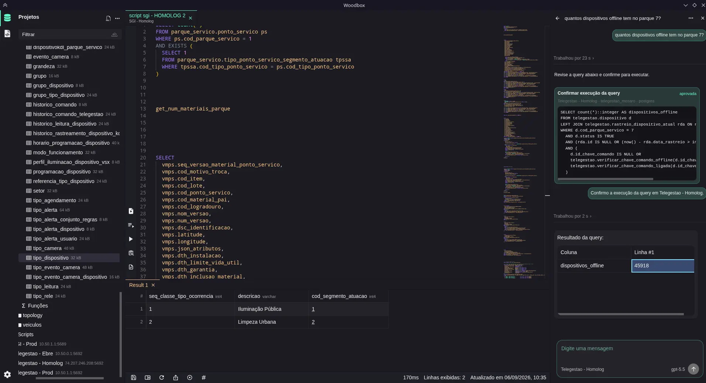
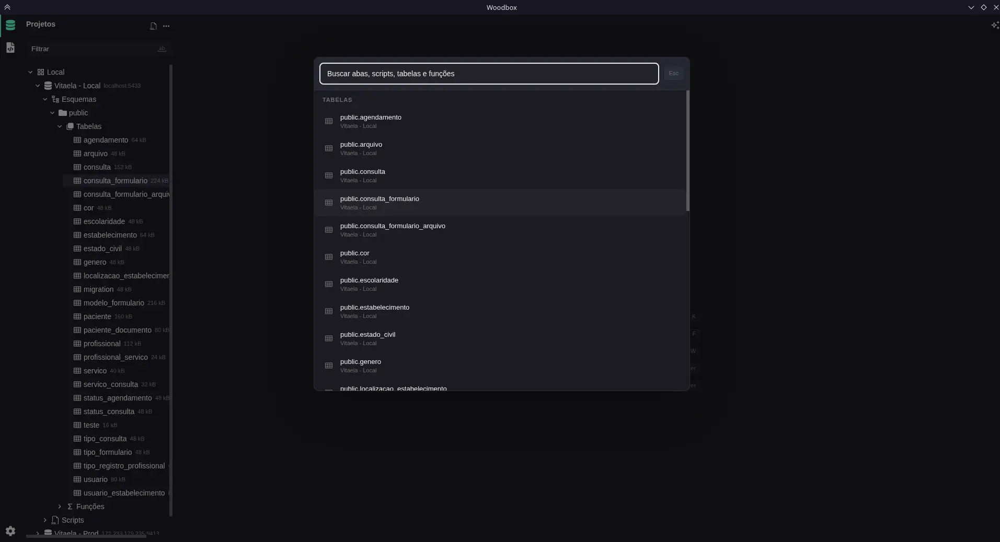

01
Organized projects
Group connections by client, product, or environment. Find your project and pick up where you left off.

Your modern SQL workspace
Explore tables, write SQL, and organize connections in a lightweight desktop app. From your first connection to your next query, all in one place.

For your everyday work
Group connections by client, product, or environment. Find your project and pick up where you left off.

Browse data, filter results, and inspect table columns, indexes, and relationships.
Autocomplete, reusable snippets, and selected-query execution. Organize queries and results in tabs.

Check types, columns, and keys before writing a query. Table details are one click away from your data.

Generate, explain, and refine queries with your configured AI provider. Prefer to write on your own? The editor works without it.

Use Ctrl/Cmd + K to find tables, functions, and scripts without breaking your train of thought.

Inside Woodbox
Explore the screens, from table data to the snippets you use every day.
On your terms
A dedicated space for database work, with local organization and the freedom to make it fit your routine.
Install the app and connect your database. No Woodbox account needed.
Projects, connections, scripts, and preferences are saved locally. When you use AI, requests go to your configured provider.
Explore the code, report issues, and suggest improvements on GitHub. Woodbox is MIT-licensed.
Getting started
Create a project and add your database connection.
Explore tables and inspect your data structure.
Open the editor, run your SQL, and inspect the results.
Ready to get started?
Get the installer for your system from GitHub releases. Open source, no sign-up.